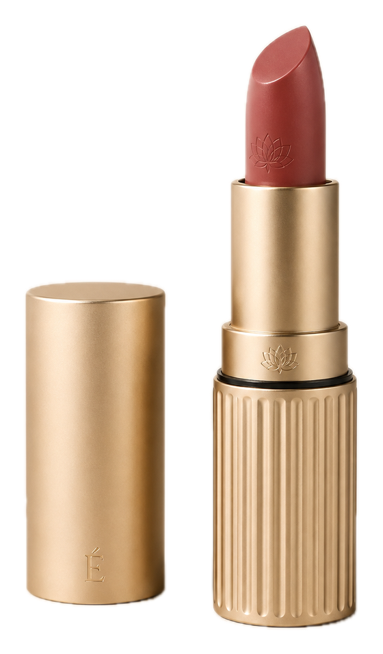

V2.8 · hatch on the front face
Superseded when V2.8B moved the hatch to +X.
Set aside.[ LAB · AS DESIGNED ][ INVESTIGATION · AS EVIDENCED ] [+]
A spine-centred creator workstation — designed from review evidence outward, not from a silhouette inward. What exists is a CAD blockout under review: evidence 40% verified, 60% source-pending.
1480 × 285 × 180→150 mm tapered envelopeDesigned · blockout
2Side hatch 230 × 120 mm on +XDesigned · blockout start dimension
3M04 laptop tunnel · M05 cassette — cued, not validatedConcept · cued
4Spine channel 36 mm on the flat back datum — origin at its baseDesigned · blockout
5Evidence · 8 of 20 review rows source-verified12 rows source-pending · 4 products
1Flat back datum · origin at its base · +Z up, +Y front, +X hatch sideDesigned · axis doctrine
2M04 laptop tunnel · M05 cassette — cued, not proven as sealed volumesConcept · cued
3M02 camera core 290 × 190 × 130 mm · start dimension, not a specificationDesigned · blockout
4Retention gate · a placeholder for position and swing — mechanism not modelledConcept · placeholder
5Evidence · 8 of 20 review rows source-verified12 rows source-pending · not engineering validation
No product imagery exists. No physical prototype. The blockout is not an engineering check.
02 · Question
The category default is a soft, top-loading camera bag that treats the laptop, audio kit and cables as afterthoughts stuffed around the camera core. CLX-CT-01 inverts that: the load is organised around the spine first, with protected rapid access and independent compartments designed as primary structure rather than as pockets. The chain is traceable — review mining, complaint clusters, requirements, eight modules, form, CAD blockout — and the evidence is reported plainly.
Products surveyed (4): Peak Design Everyday V2 · WANDRD PRVKE 21L · Shimoda Action X25 · Nomatic McKinnon. No review quotes or scores are reproduced here.
Doctrine · six frozen pillars
Provisional in detail — corrections may refine a pillar's spec, not remove the pillar.
03 · Mechanism
Datums first, then volumes back to front, then cuts and placeholders last. Step through the modelling plan; the taper is drawn live, and the side hatch swings while the amber gate stays.
Side · from +X
Axonometric · back right
Plan · section at Z 195 · reduced
S10 · 4 harness mount points · rear face · placeholders
Sizes are the blockout's starting point, not its specification. Positions are schematic; the hatch hinge side is not specified, so its swing is drawn for illustration only. Designed · modelling plan, not final
Tool mapping · units mm
04 · Inside
VisibleHidden / cuedDatum · verifiedPending · gateFrozen pillar · tunnel · dock
A → F · evidence-to-design chain
R = frozen requirement Specified intent · T = provisional target, carries a “pending” flag Pending — the T01–T05 namespace was introduced to resolve a duplicate-ID conflict (R12–R16), a fix to traceability, not cosmetics. R16 is quoted from the earlier June triplet; R12–R16 were later re-namespaced, so its current ID is unconfirmed. The Modules column is this sheet’s reading of each system answer, not a mapping stated in the source.
Eight modules · numbering locked to the component architecture
The blockout establishes M01 / M02 / M03 / M06 / M08; M04 and M05 stay internal and cued until section cuts or exploded views prove them.
Axis doctrine
| Axis | Direction | Carries |
|---|---|---|
| +Z | Up | Blender-native vertical axis |
| +Y | Front / depth | Toward the front shell and cassette zone |
| +X | Hatch side | Protected rapid-access side hatch |
| −X | Tripod side | Tripod dock channel, opposite the hatch |
| Origin | Base of the flat back plane | Centred left–right; every module coordinate references this datum |
Follows the later Blender axis correction. The Phase 08 modelling plan had used +Y up and +Z toward the front.
Form spec · start dimensions
| Element | Spec, mm | Role |
|---|---|---|
| Envelope | 480 × 285 × 180→150 | Frozen carry volume |
| Depth taper | 180 → 150 | Centre of gravity + worn read |
| Camera core | 290 × 190 × 130 | Protected payload |
| Side hatch | 230 × 120 | Rapid access, +X face |
| Spine channel | 36 | Load centring, back plane |
| Laptop tunnel | 28 deep · 390–420 H | Independent sleeve (internal) |
| Cassette | 200 × 120 × 40 | Removable organiser (internal) |
| Tripod dock | 40 channel | Exterior, −X |
The taper runs from 180 mm at the lower / mid body to 150 mm at the shoulder, pulling mass toward the wearer's centre of gravity; corners soften at R22. The modelling plan words the taper back-to-front; these drawings follow the case page.
Blockout version log
Version glyphs are illustrative side profiles, not renders.
V2.x review · matches spec in script
V2.x review · flagged / open
Read from the generating script and cross-checked against viewport renders: a visual / code review of a blockout, not engineering validation.
05 · Pigment & material
Five authored colours carry meaning in the June 2026 drawings and badges. There is no CMF yet: the V2.1 pass asks for “subtle module colours”, with no final fabric or straps.
Frozen pillars · tunnel · dock
Authored · case-page badges + June diagrams
Camera core
Authored · stroke on #3A1C12 in the June diagrams
Verified · flat back datum
Authored · evidence meter + datum line
Pending · retention gate
Authored · evidence meter + gate
Cued · M04 / M05
Authored · case-page badges
Material
Not specified. The blockout is solids only — no fabric thickness, surfacing, straps or harness geometry. Finish data (roughness, gloss, L*) does not exist for this project.
Form rules
Form rules are design intent Designed · rules, not yet built
06 · Decisions
D1Hatch placement
V2.8 · hatch on the front face
Superseded when V2.8B moved the hatch to +X.
Set aside.V2.8B onward · hatch on +X
With the tripod dock on −X, the hatch and the dock never share a side.
D2Envelope
V2.8 · undersized, no taper
The first assembled lock.
Set aside.V2.8B · spec-locked envelope, true taper
480 × 285 × 180 → 150 mm; the V2.x review reads it as a true tapered mesh.
D3Hero lens
64 mm · exaggerates verticality
The 285 mm width reads narrower than it is.
Set aside.35–40 mm · lower camera height
The stated rule for any hero render of the blockout.
D4Labels
Labels printed onto the model
Flagged “remove” in the first blockout review.
Set aside.Annotations off-object, in the layout
Leaders and captions live on the sheet, not the shell.
D5Evidence scoring
Hand-assigned complaint scores
Fake precision.
Set aside.A weighted model
Overclaiming headlines softened; targets carry a pending flag.
Glyphs are illustrative diagrams of each decision, not renders.
07 · Claim ledger
| Claim | Value | Level | Qualifier |
|---|---|---|---|
| Tapered envelope | 480 × 285 × 180→150 mm | Designed · blockout | Built as a true tapered mesh; matches the spec in script (V2.x review). |
| Depth taper | 180 → 150 mm | Designed | Lower / mid body to shoulder; pulls mass toward the wearer's centre of gravity. |
| Corner softening | R22 mm | Designed | An earlier draft listed R18–24 shell · R8–12 hatch · R6–10 spine. |
| Camera core · M02 | 290 × 190 × 130 mm | Designed · start dimension | Spine-biased; back face against the laptop tunnel. |
| Side hatch · M03 | 230 × 120 mm on +X | Designed · start dimension | An earlier draft marked the size “source pending”. |
| Retention gate · M03 | Placeholder | Concept · placeholder | Position and swing only, not its mechanism. |
| Spine channel · M01 | 36 mm | Designed · blockout | In script. |
| Tripod dock · M06 | 40 mm channel, −X | Designed · start dimension | On the side opposite the hatch. |
| Laptop tunnel · M04 | 28 deep · 390–420 usable H · 14–16 in | Concept · cued | Internal; not proven as a sealed independent volume. |
| Cable / audio cassette · M05 | 200 × 120 × 40 mm | Concept · cued | Internal; not proven as a sealed independent volume. |
| Harness · M07 | 4 mount points | Concept · placeholder | The harness itself is not modelled. |
| Review evidence | 8 of 20 rows source-verified · 40% | EV-V01–EV-V08, across four products. | |
| Remaining rows | 12 of 20 · 60% | Source-pending | Treated as benchmark, labelled wherever they appear. |
| Convergent finding | Weight vs protection / access | From the verified rows; converged across all four products. | |
| Must-have requirements | R01 R02 R04 R05 R06 R08 R10 R11 | Specified intent | Frozen R-series requirements. |
| Provisional targets | T01–T05 | Specified intent · pending flag | T02 is a retrieval target “to be validated physically”. |
| Six pillars | Frozen in intent | Designed · doctrine | Provisional in detail. |
| Blockout review | V2.x matches the baseline envelope | Designed · visual / code review | Not engineering validation; V2.1 pending. |
08 · Provenance, credits, revisions
| Rev | Date | Change |
|---|---|---|
| A | 13 Jun 2026 | Research phase · evidence collection (its counts were later superseded) |
| B | 14 Jun 2026 | CAD modelling plan · ten-step blockout sequence (Phase 08) |
| C | 14 Jun 2026 | Case page · 4 products, 8 verified rows · V2.x blockout review |
| — | Undated | Blockout V2.8 → V2.8B → V2.x |
| D | Pending | V2.1 refinement pass |
| E | 2 Oct 2026 | This sheet · June diagrams re-inked; axonometric and section drawn from the blockout spec |
Dates A–C are the dates of the source files; the blockout versions carry no dates.
09 · Next specimen
Specimen 07 / 08 · sheet 09
ÉCLOS — refillable lipstick
The case you keep. The cartridge you replace.
